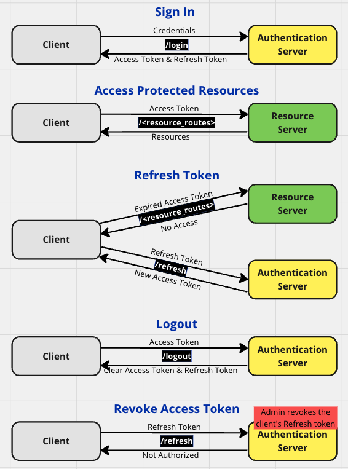

Updated ( 2023-02-13 / 2024-03-22 )
- after successful client login the server generates a session token then sends it to the client as cookie
- the session token is included in every request as cookie (so the server can verify if the client is logged in)
- after successful client login the server creates and signs the token and sends it to the client in a request body
- the token contains all necessary session informations (username, expiration, signature, etc...) so these informations are stored on client side
- the token is included in every request's Authorization: Bearer token header
- session informations are stored on client side, the server verifies the tokens signature and considers the token valid on successful signature verification
| Criteria | Session Authentication | Token Authentication |
|---|---|---|
| - information stored in token | - contains no information | - contains all session informations (user, expiration, signagure, etc...) |
| | | ||
| - authentication stored on side | - server | - client |
| - client sends for authorization | - token in cookie | - token in Authorization: Bearer token header |
| | | ||
| - server process to authorize the client request | - database lookup + token validation process | - decrypts the token and verifies its signature |
| - server can control login operations | - yes because the token is stored on server side | - no (limited) because the token is stored on client side |
| - prefered implementation | - user-to-server connection | - server-to-server connection |
| | | ||
| - cyber attack weakness |
- man-in-the middle - cross-site request forgery (CSRF) |
- man-in-the middle - token steal - breaches of secret key |
| | | ||
| - pros |
- more secure because the data is kept on server side - server has more control over the session - easy to implement |
- scalable because the server does not store the token - stateless, the server does not required to keep track the user's session - required less server resources and infrastructure |
| - cons |
- hard to scale because the session information is kept on server side, this becomes a problem with a large number of users - requires more server resources (storage, processing power) |
- less secure because session informations are stored on client side - server has less control because the token is not stored on its side - harder to implement (needs secret key, validation, etc...) |
Never expired Access token
- we issue an access token what never expires (we need to have a mechanism to revoke the token)
Expring Access token
- the user needs to re-authenticate when the token expires (lives between the current session to a couple of weeks)
Access token & Refresh token
- the Access token lives between a few hours to a few weeks (depending security requirements)
- the Refresh token is kept by the Authentication Server, getting a new Access token happens without any user action
- talking to the Authentication server happens on the back channel (highly sercure), talking to the Resoruce server happens on the front channel (less sercure)
